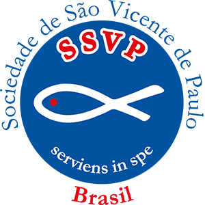
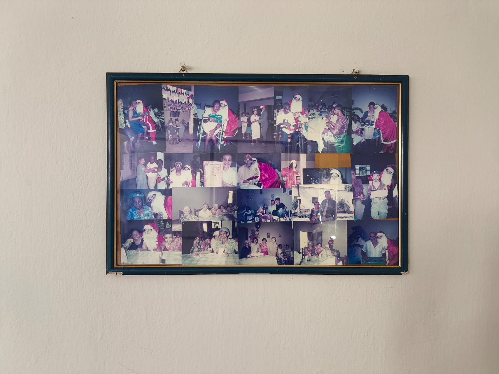
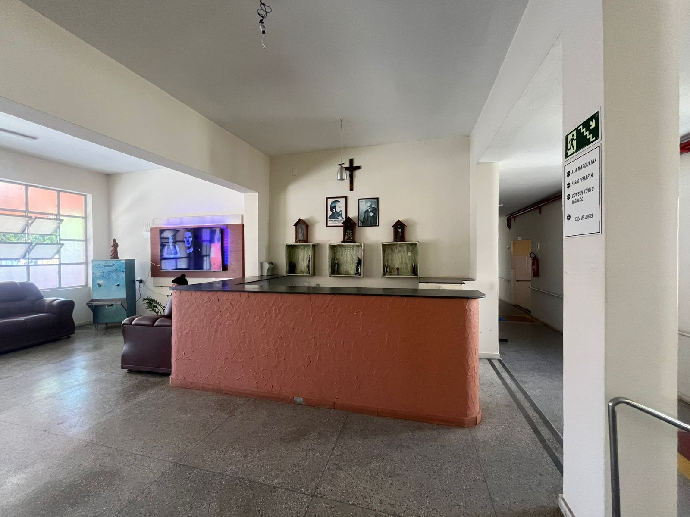
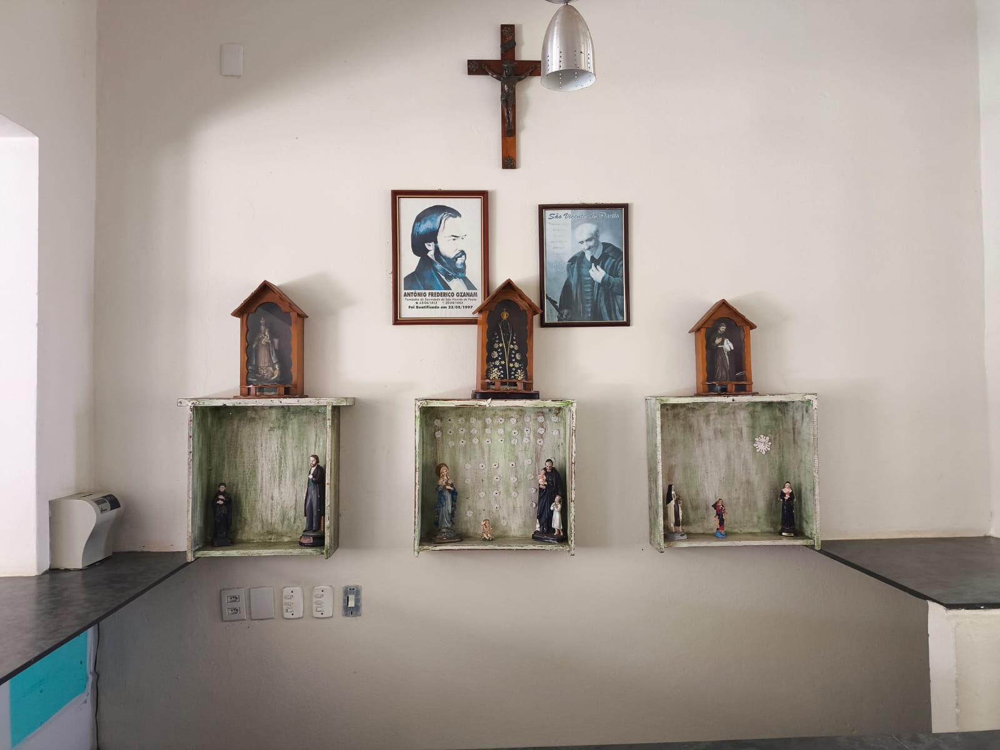
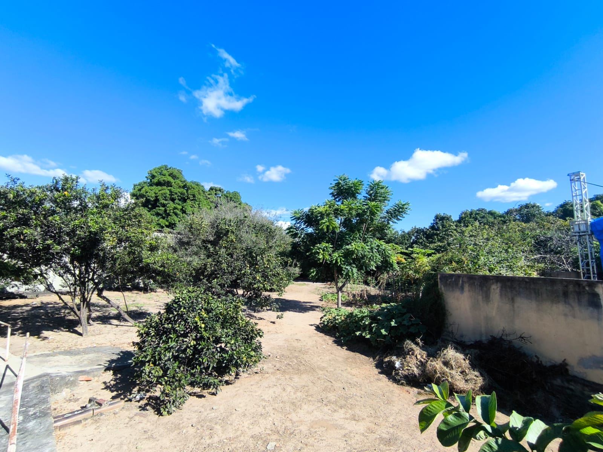
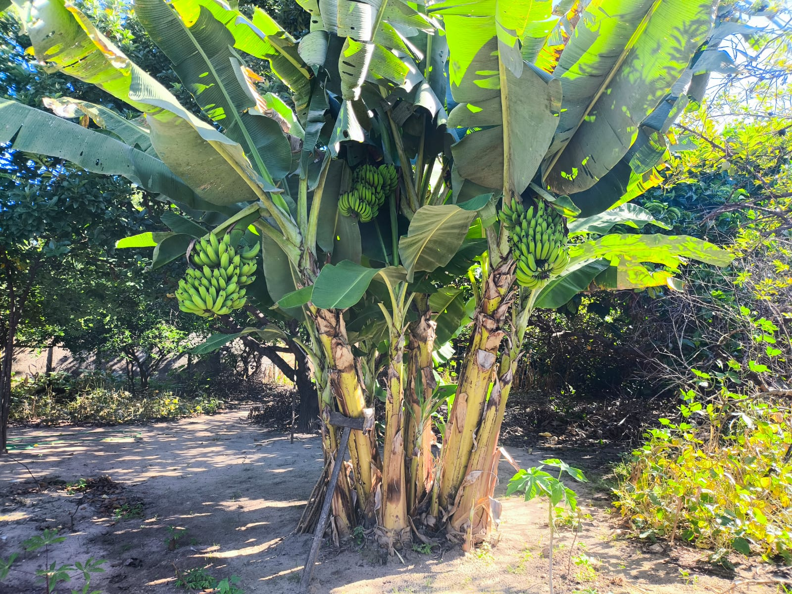
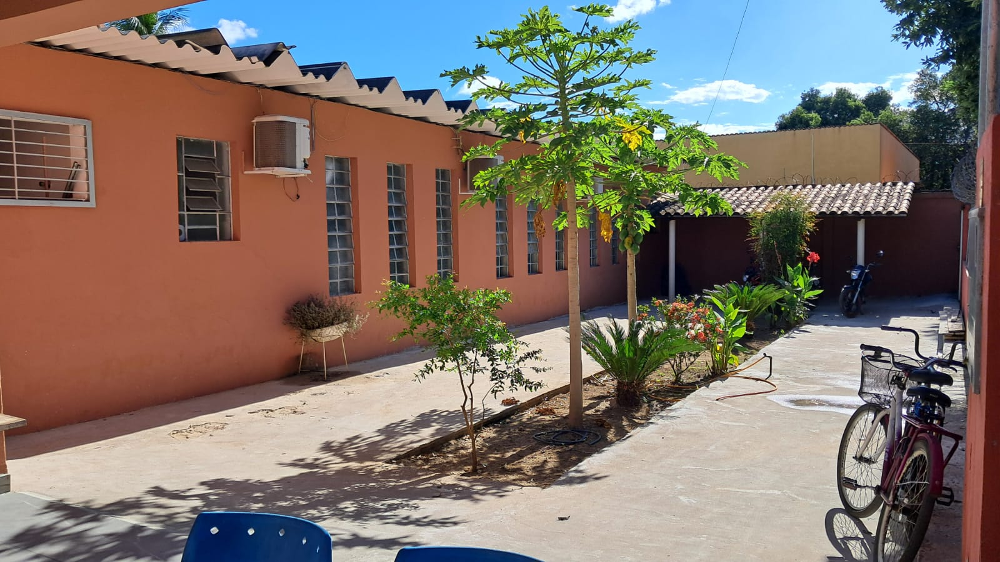

Desde 1993, o Lar dos Idosos de São Vicente de Paulo promove qualidade de vida, proteção integral e resgate da dignidade para idosos de Pirapora e região.
Somos uma Organização da Sociedade Civil (OSC) filantrópica dedicada ao acolhimento institucional de idosos a partir de 60 anos, em situação de vulnerabilidade.
Nossa trajetória de acolhimento evoluiu imensamente desde as modestas casinhas brancas de janelas azuis que formavam o "Antigo Asilo". Hoje, oferecemos uma estrutura ampla, acessível e segura. Nossa recepção, que preserva nossa forte raiz vicentina com oratórios dedicados a Antônio Frederico Ozanam e São Vicente de Paulo, é a porta de entrada para um ambiente focado no bem-estar integral.
A instituição conta com espaços estrategicamente sinalizados e divididos para garantir o melhor atendimento, incluindo Ala Masculina, Fisioterapia, Consultório Médico e Sala de Jogos. Além da segurança dos ambientes internos, nossos residentes têm livre acesso a uma belíssima e extensa área externa. O espaço conta com jardins arborizados, calçamentos acessíveis e um rico pomar repleto de mamoeiros e bananeiras, proporcionando contato constante com a natureza e tranquilidade.
O maior patrimônio do Lar dos Idosos, no entanto, é a vida que pulsa aqui dentro. Nossos corredores abrigam murais repletos de fotografias que narram décadas de memórias felizes: o convívio diário, as confraternizações, os aniversários e as inesquecíveis festas de Natal celebradas com a presença e o carinho constante da comunidade.






A manutenção dos nossos serviços gratuitos conta com o apoio da comunidade. Suas doações podem ser entregues na sede ou recolhidas por nossa equipe.
Escaneie o QR Code abaixo com o app do seu banco:
Ou, se preferir, utilize nossa chave CNPJ:
Recebemos doações contínuas. Os itens de maior utilidade atualmente são:
O carinho e a presença transformam vidas. Para se tornar um voluntário e alinhar atividades, entre em contato diretamente com a nossa direção presencialmente ou pelo WhatsApp institucional.
Mantemos uma política de acesso aberto e receptivo. Não é necessário realizar agendamento prévio, basta comparecer à instituição dentro do horário.
🕒 Visitas Abertas: Todos os dias, das 14:00h às 16:00h.
⚠️ Orientações Importantes:
Para dúvidas administrativas ou informações sobre o recolhimento de doações, fale com a direção através dos nossos contatos oficiais.
Rua Camilo dos Santos, 194
Santos Dumont - Pirapora/MG
CEP: 39274-158
laridosos.pirapora@hotmail.com
Dúvidas gerais